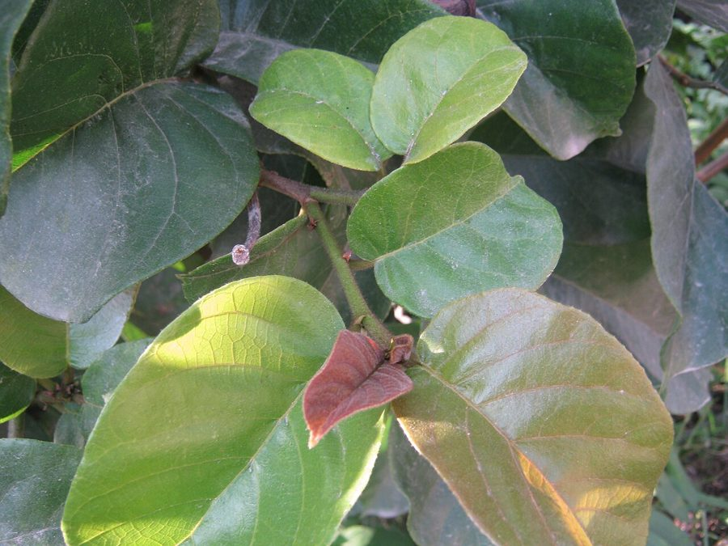

बड़हलMonkey Jack
Artocarpus lacucha · Moraceae · FLR-0376

- Scientific name वैज्ञानिक नाम
- Artocarpus lacucha Buch.-Ham. ex D.Don
- Family कुल
- Moraceae
- Hindi हिंदी
- बड़हल
- Local names स्थानीय नाम
- monkey jack, barhal, badhal, lakoocha
- Status here यहाँ की स्थिति
- native
- Movement आवागमन
- Resident, here all year
- Known from कहाँ दर्ज
- Others have published records from the wider Awadh–Purvanchal plain, none yet from Basti–Ayodhya अवध–पूर्वांचल से दूसरों के प्रकाशित अभिलेख, बस्ती–अयोध्या से अभी नहीं
- IUCN IUCN
- LC
- Review समीक्षा
- not yet reviewed
When to look कब देखें
Present all year. साल भर मौजूद।
Uses and possibilities उपयोग और संभावनाएँ
Drawn from the documented uses in the profile below, where each is labelled traditional, current or a research lead. All uses →
Tell it apart from इनसे अलग पहचानें
बड़हल / Monkey Jack
Artocarpus lacucha Buch.-Ham. ex D.Don — Moraceae
बड़हल — अवध और पूर्वांचल के पुराने ग्रामीण बागों का एक प्रसिद्ध देशी फलदार छायादार वृक्ष है जिसकी शाखाओं से दूधिया रस निकलता है। इसके पत्ते बड़े, खुरदुरे और गहरे हरे होते हैं। बसंत में इस पर पीले गोलाकार फूल आते हैं और बरसात के मौसम में इसके खट्टे-मीठे, बेडौल, पीले-नारंगी गूदेदार फल पकते हैं जिन्हें बड़े चाव से खाया जाता है और जिनका अचार बनाया जाता है।
Quick Identification त्वरित पहचान
| Feature | Description |
|---|---|
| Habit | Medium to large deciduous to semi-evergreen tree with dense rounded crown |
| Exudate | Sticky white latex exudes copiously from severed twigs, leaves, and unripe fruit |
| Leaves | Large, coriaceous, elliptic-oblong, rough above and softly tomentose beneath |
| Flowers | Tiny unisexual flowers crowded onto dense, globose axillary heads |
| Fruit | Irregular, irregularly lobed, velvety yellowish-orange syncarp with subacid pulp |
Distinguished from the related jackfruit by its smaller, irregularly lobed, smooth to velvety fruits without spiny tubercles, and broad elliptic leaves that are softly pubescent underneath.
Field tip: Look in old village orchards for large leafy trees bearing lumpy, orange-yellow fruits the size of a fist with a delightful sweet-sour aroma.
हिंदी: कटहल के कुल का यह वृक्ष खट्टे-मीठे बिना कांटे वाले पीले-नारंगी बेडौल फलों और शाखाओं से निकलने वाले सफेद दूध जैसे रस से पहचाना जाता है।
Morphology आकारिकी
| Feature | Description |
|---|---|
| Bark | Dark greyish-brown, rough, exfoliating in small irregular woody scales |
| Foliage | Alternate, simple, coriaceous, elliptic to broadly oblong with entire margins |
| Inflorescence | Axillary solitary globose heads; male heads yellow, female heads green |
| Syncarp | Subglobose to irregularly lobed composite fruit, velvety puberulous |
| Seeds | Oblong seeds embedded in sweet-acid reddish-pink to orange edible pulp |
| Measurement | Measurement not available in consulted open sources. |
A handsome spreading tree with rough greyish-brown bark exuding copious white milky latex when bruised. The leaves are large, thick, elliptic-oblong, dark green and rough above, softly tomentose beneath with prominent lateral nerves. Male flower-heads are orange-yellow and spongy; female heads are greener. The fruit is a subglobose, velvety syncarp containing numerous seeds surrounded by orange pulp.
हिंदी: इसकी छाल गहरे भूरे रंग की होती है जिससे सफेद दूध निकलता है। पत्ते बड़े और नीचे से मखमली रोएं वाले होते हैं। फल गोल लेकिन बेडौल होता है जिसके अंदर नारंगी गूदा और बीज होते हैं।
Behaviour & Ecology पारिस्थितिक भूमिका
A long-lived climax tree of moist tropical forests and rural agroforestry landscapes. It casts dense perennial shade, moderating soil surface temperatures and conserving soil moisture. Flowering occurs during the spring warming period (March and April). The abundant fragrant flowers attract numerous pollinating insects, including bees, flies, and beetles. The heavy fruits ripen during the monsoon rains, falling to the ground where they nourish terrestrial and arboreal frugivores.
हिंदी: यह एक घना छायादार पेड़ है जो जमीन की नमी बनाए रखता है। बसंत में इसके फूलों पर मधुमक्खियां और भृंग मंडराते हैं। बरसात में पकने वाले इसके फल वन्य जीवों के लिए उत्तम आहार हैं।
Life Cycle / Phenology जीवन चक्र
Semi-deciduous, shedding a portion of old foliage during late winter before producing fresh copper-tinted young leaves alongside flower heads in early spring. Fruit development proceeds through the hot pre-monsoon summer, with ripening occurring from July to September during the monsoon. Seeds germinate readily upon falling onto damp soil, with seedlings establishing rapidly in rich alluvial soils.
हिंदी: जाड़े के अंत में इसके कुछ पत्ते झड़ते हैं और बसंत में नई तांबई पत्तियां और फूल निकलते हैं। फल गर्मी भर बढ़ते हैं और सावन-भादों की बरसात में पककर तैयार होते हैं।
Associated Species / Interactions संबद्ध प्रजातियाँ और सहजीवन
The dense spreading crown provides nesting and roosting habitat for rural birds and woodland wildlife. Fruit bats and frugivorous birds consume the ripe fallen syncarps, dispersing viable seeds across rural woodlots. Flower heads are visited by small pollinating insects, including bees, flies, and beetles.
हिंदी: इसकी घनी शाखाओं पर भुजंगा और मैना जैसे पक्षी घोंसले बनाते हैं। इसके पके फलों को चमगादड़ और पक्षी खाकर बीजों को दूर-दूर तक फैलाते हैं।
Pests and Diseases कीट और रोग
Generally hardy and resistant to severe insect damage. Occasional infestations of giant mealybugs (Drosicha mangiferae) and shoot-boring caterpillars occur on young flushes. Fungal leaf spots and mildews occur during prolonged monsoon humidity, but rarely affect tree vitality.
हिंदी: यह एक मजबूत पेड़ है जिस पर बीमारियों का असर कम होता है। कभी-कभी कोमल शाखाओं पर मिलीबग या पत्तों पर फफूंद के धब्बे लग सकते हैं।
Agricultural / Human Relevance कृषि प्रासंगिकता
Held in high esteem in Awadhi and Bhojpuri culinary heritage. The unripe green fruit is boiled and prepared as a rich vegetable curry or sliced and pickled in mustard oil. The ripe fruit is peeled and relished fresh for its refreshing sweet-and-sour pulp, or dried into tangy sun-dried leathers (badhal ki amavat). The wood is durable and used locally for building construction and rural furniture.
हिंदी: बड़हल का अवध के खान-पान में विशेष स्थान है। इसके कच्चे फलों की स्वादिष्ट सब्जी और खट्टा अचार बनता है। पके फल को छीलकर नमक-मिर्च के साथ खाया जाता है और इसकी अमावट बनाई जाती है। इसकी लकड़ी भी मजबूत होती है।
Expected Locally स्थानीय रूप से अपेक्षित
Not a field record. Written from published accounts for eastern Uttar Pradesh. No confirmed local sighting yet — if you have seen it, that is what the atlas needs.
अभी तक स्थानीय पुष्टि नहीं। यह विवरण प्रकाशित स्रोतों से है, किसी अवलोकन से नहीं।
Occurs in mature village groves, temple grounds, and traditional orchards throughout the alluvial plains of Awadh. Observers in eastern Uttar Pradesh should check older rural homesteads and riverbank hamlets for large trees bearing yellow velvety fruits in July and August.
GBIF holds published records from the wider Awadh–Purvanchal plain, none yet from Basti–Ayodhya.
A first local record for the atlas would be a clear photograph showing diagnostic features, accompanied by date, time, and precise location coordinates sent through the project's About page.
हिंदी: बस्ती और अयोध्या के पुराने बागों, देवस्थानों और गांवों की सीमाओं पर बड़हल के पुराने पेड़ मिल सकते हैं। इसके फल या पत्ते की साफ फोटो एटलस को भेजें।
Distribution वितरण
Global range: Native across South Asia and Southeast Asia, from India and Nepal through Myanmar, Thailand, to Malaysia.
In India: Found wild in the sub-Himalayan tract, Western Ghats, and northeastern states; widely planted in village groves across the northern plains.
In Uttar Pradesh: Documented across the Gangetic plains in rural homestead agroforestry plantings.
In Basti district / eastern UP: Documented in traditional mango and mixed fruit groves based on district gazetteers and regional floristic surveys.
हिंदी: यह भारत, नेपाल और दक्षिण-पूर्व एशिया का मूल निवासी है। उत्तर प्रदेश के गांवों में पुराने जमाने से इसे बागों और आहातों में लगाया जाता रहा है।
Research Questions शोध प्रश्न
- What is the genetic diversity of surviving relict Artocarpus lacucha accessions in Awadh village homesteads?
- How do local farmers propagate badhal from seed versus vegetative cuttings in eastern Uttar Pradesh? / क्या किसान इसे बीज से उगाते हैं या कलम बांधकर?
- What are the key antioxidant and phenolic components responsible for the sour-sweet flavor of ripe syncarps?
- A schoolchild can examine the white sticky milk that oozes out when a badhal leaf stem is snapped / क्या कोई बच्चा बड़हल की पत्ती तोड़ने पर निकलने वाले सफेद दूध को देख सकता है?
- How does the replacement of traditional village orchards with mono-crop groves affect monkey jack survival?
हिंदी: क्या पुराने देसी बड़हल के पेड़ अब गांवों से कम हो रहे हैं? क्या बच्चे पत्ती तोड़ने पर निकलने वाले दूधिया रस को देखकर इसे पहचान सकते हैं?
Similar Species मिलती-जुलती प्रजातियाँ
| Species | How to tell apart | हिंदी | |
|---|---|---|---|
| Jackfruit \ | Artocarpus heterophyllus | Tremendous syncarp covered in sharp conical spines; leaves smooth and glossy beneath | कटहल का फल बहुत बड़ा और कांटेदार होता है और उसके पत्तों के नीचे रोएं नहीं होते |
| Banyan \ | Ficus benghalensis | Leaves with prominent basal nerves; produces paired small red figs rather than large syncarps | बरगद में जटाएं (वायवीय जड़ें) निकलती हैं और उस पर छोटे गोल लाल गूलर जैसे फल लगते हैं |
Field rule: Spreading latex-bearing tree with large velvety-backed leaves and irregular, unspined yellowish-orange sour-sweet syncarps.
हिंदी: सफेद दूधिया रस, नीचे से मखमली पत्तों और बिना कांटे वाले खट्टे-मीठे पीले-नारंगी बेडौल फलों वाला पेड़।
Taxonomy & Classification वर्गीकरण
Original description. Buchanan-Hamilton ex D.D. Don, Prodromus Florae Nepalensis, p. 328; described under the name Artocarpus lacucha.
Subspecies. Monotypic species. Formerly and widely treated in historical Indian floras (Hooker 1885; Duthie 1915) under the synonym Artocarpus lakoocha Roxb.
Family and order placement. Belongs to the mulberry family Moraceae, order Rosales, class Magnoliopsida.
Phylogenetic notes. Placed in the genus Artocarpus J.R.Forst. & G.Forst., closely related to breadfruit and jackfruit.
IUCN status rationale. Evaluated as Least Concern (LC) due to broad native range and extensive rural cultivation.
हिंदी: इसे 1825 में Artocarpus lacucha नाम से वर्णित किया गया था। पुराने वनस्पति साहित्य में इसे Artocarpus lakoocha भी लिखा गया है। यह मोरेसी कुल का सदस्य है।
Photo Gallery फोटो गैलरी
No photos yet — add field photos to media/species/monkey_jack/ and run node scripts/sync_photos.js.
Photos needed आवश्यक फोटो
- [ ] Mature tree showing spreading canopy and foliage (घने छत्र वाला बड़हल का विशाल पेड़)
- [ ] Cluster of ripe yellowish-orange syncarps on branch (टहनी पर लगे पके हुए पीले-नारंगी फल)
- [ ] Cross-section of ripe fruit showing orange edible pulp and seeds (कटे हुए फल के अंदर नारंगी गूदा)
References संदर्भ
- Original description: Buchanan-Hamilton, F. (1826). Commentary on the Herbarium Amboinense. Memoirs of the Wernerian Natural History Society, 5, p. 333.
- Hooker, J. D. (1885). The Flora of British India. Vol. 5. L. Reeve & Co., London, p. 543. (as Artocarpus lakoocha).
- Duthie, J. F. (1915). Flora of the Upper Gangetic Plain, and of the Adjacent Siwalik and Sub-Himalayan Tracts. Vol. 3, Part 1. Superintendent of Government Printing, Calcutta, p. 141. (as Artocarpus lakoocha).
- Jarrett, F. M. (1960). Studies in Artocarpus and allied genera, IV. A revision of Artocarpus subgenus Pseudojaca. Journal of the Arnold Arboretum, 41(2), 111–140.
- GBIF Occurrence Data — Artocarpus lacucha, India (2025).
- IUCN Red List of Threatened Species — Artocarpus lacucha, assessed 2024.
Source file: species/flora/trees/monkey_jack.md